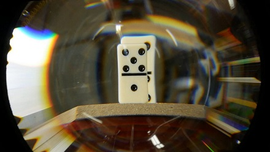
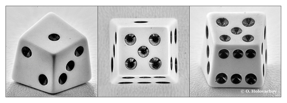
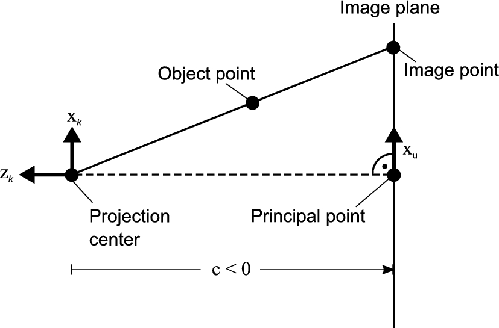
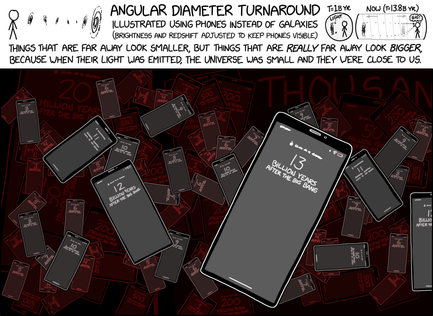

Rendering Hypercentric Perspective
Non-Euclidean games (hyperbolic rooms, spherical worlds, corridors stitched together by portals) work because you can render an impossible space. This started as a question I asked on Computer Graphics Stack Exchange: can you render an impossible camera? A hypercentric lens is exactly that. Objects farther from it come out larger, not smaller, the reverse of every eye and every ordinary camera. It turns out one bounded dial unifies perspective, orthographic, and hypercentric projection, and the whole thing is a single line in a vertex shader.
The framing came straight from those games: after seeing how deeply non-Euclidean spaces read on screen, I wondered whether other unconventional perspectives could be rendered the same way. Hypercentric perspective is the cleanest example. In a normal camera every sightline meets at the eye, so distance shrinks things; in a hypercentric lens the sightlines converge at a point beyond the scene, so distance grows them, and a single fixed viewpoint can even see a little way over the tops and down the far sides of objects. Because it needs bulky optics (a large lens and a long throw), only a handful of real photographs exist:


The math
Put the camera at the origin looking down $+z$, so front-depth $d>0$ grows away from the eye. Model every sightline as one cone whose apex sits on the axis at depth $d_c$. By similar triangles, a feature at depth $d$ lands on screen at a size proportional to the apex-to-image-plane distance over the apex-to-feature distance. Fixing a reference depth $Z_c$ just past the scene and a near plane $d_0$ that stays unmagnified, and writing the one bounded dial $g = Z_c/d_c \in [-1,1]$, the whole family collapses to a single scale:
$$ s(d) \;=\; \frac{d_c - d_0}{\,d_c - d\,} \;=\; \frac{1 - g\,d_0/Z_c}{\,1 - g\,d/Z_c\,} $$
That one expression is all three cameras. $g<0$ puts the apex behind the eye ($d_c<0$), so $s$ falls with depth: ordinary perspective, far shrinks. $g=0$ sends the apex to infinity, $s\equiv 1$: orthographic, size independent of depth. $g>0$ puts the apex beyond the scene ($d_c = Z_c/g > d_{\text{far}}$), so $s$ rises with depth: hypercentric, far grows. Orthographic is just the single point where the sign of the depth dependence flips.
The physically-calibrated version of the same idea (from the paper the accepted answer points to) shares the same reciprocal-in-depth ($1/z$) structure, $(x_u, y_u) = \dfrac{c}{z_k}\,(x_k, y_k)$ for a camera-space point, then adds a radial lens-distortion term before mapping to pixels:

Some code
Because $s(d)$ multiplies the lateral coordinates directly, there is no projection matrix and no perspective divide: you set clip-space $w=1$ and scale $x,y$ by $s(d)$ in the vertex shader. Depth is written as a plain ramp of true front-depth, independent of $g$, so the z-buffer always orders by real distance and the scene never turns inside out as the apex slides through infinity. That is the whole projection, the core of the engine below (which adds only the usual fragment shading and clamping around it):
float d = -viewPos.z; // front-depth, >0 ahead of the camera float s = (1.0 - g*d0/Zc) / (1.0 - g*d/Zc); // one scale, all three regimes gl_Position = vec4( focal * viewPos.x * s / aspect, // x,y carry the vergence focal * viewPos.y * s, (d - lo) / (hi - lo) * 2.0 - 1.0, // depth: true distance, g-independent 1.0); // w = 1, no perspective divide
There is a second route, useful if you are stuck in an engine whose camera you cannot reach into. As Nathan Reed points out in the thread, a hypercentric camera's rays are just an ordinary perspective camera's rays reversed. So you can render one without touching the projection: put a normal camera at the convergence point aimed back through the scene, then reverse the depth test (or swap near and far) and flip backface culling to match. The tradeoff is that anything past the convergence point is clipped unless you add a second pass. The shader above takes the direct route instead, and drives the live renderer below.
An engine you can drive
Which brings it back to where the question began. Non-Euclidean game engines (like CodeParade's
non-Euclidean rendering engine)
hand you a strange geometry and simply let you move around inside it; this does the same for a strange camera. Below, embedded whole, is
Hypercentrica: a self-contained WebGL2 scene, no libraries, running the shader above. It
sweeps vergence g on its own, so watch the far side of the model stop shrinking and start growing
as the apex crosses infinity at $g=0$, with the cottage's top and back faces swelling into view. Drag to
orbit, scroll or pinch to zoom, drop in your own .obj, or grab the g slider yourself and
use Pause / Play to stop and restart the sweep.
Controls
- Drag
- Orbit the camera around the model.
- Scroll / pinch
- Zoom in and out.
- vergence g
- The one dial that matters: slide the apex from behind the eye, out to infinity, and past the scene. Perspective → orthographic → hypercentric. −1 … 1
- Z_c, f, d₀, sample d
- Reference depth, zoom, the unmagnified near plane, and the depth the printed matrix is read at.
- Fullscreen
- Expand the viewport to the whole screen.
- Panel titles
- Click Hypercentrica or the matrix header to collapse that panel.
- Pause / Play, Cottage, Load .obj
- Stop or restart the automatic $g$ sweep; restore the default model; or load your own mesh.
The same trick, at cosmic scale
Far meaning bigger is not only a lens trick; nature runs it at the largest scale there is. Because space was smaller when a very distant galaxy emitted its light, that galaxy sat physically close to us at the moment of emission, so it now subtends a wider angle on the sky than a merely-distant one. Past a redshift of roughly $1.5$, more distant galaxies stop shrinking and start looking bigger again. Astronomers call it the angular diameter turnaround, and it is the exact cosmological echo of the $g>0$ regime above: sightlines that effectively converge somewhere beyond the source, so distance magnifies instead of shrinks. I asked whether that turnaround might resolve one large-scale-structure puzzle in a question on Astronomy Stack Exchange.

That makes the engine a ready-made sandbox for the effect. The same $s(d)>1$ machinery that swells the cottage's far wall is what an angular-diameter curve needs: swap the fixed geometric apex for a depth that tracks a redshift relation, and Hypercentrica becomes a toy model of the sky JWST sees looking back toward the big bang. That is the next thing I want to build on top of it.